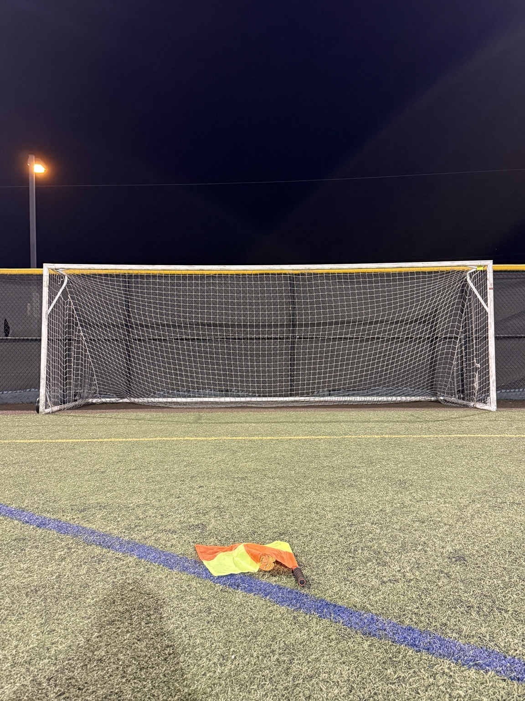
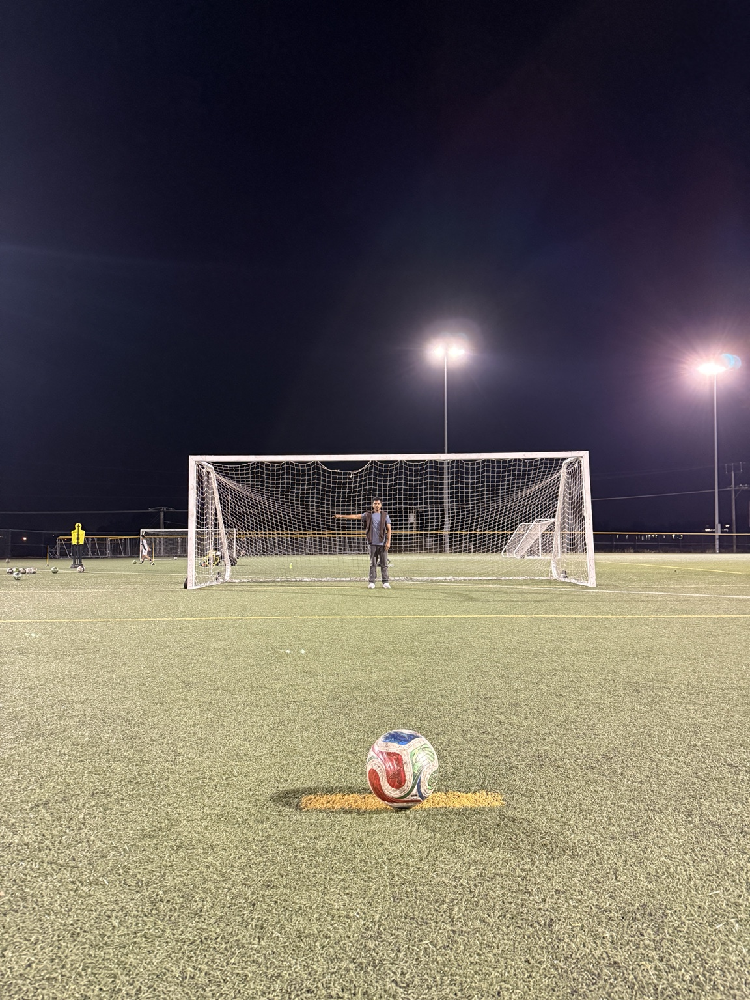
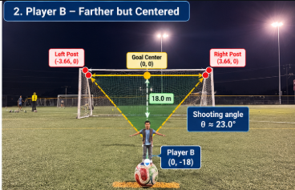
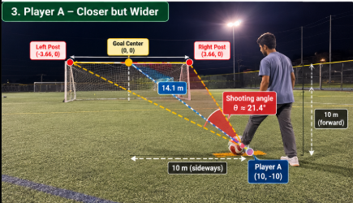

Create — Soccer Shot Opportunity Map
My creation is a visual summary of the investigation. It turns my findings into a field map that shows where the geometric shooting chance is stronger or weaker.
From real field to mathematical creation

Real goal: the fixed object I started from.

Real shooting view: this helped me think about the visible opening of the goal.
Visual 1 — Opportunity map
Visual 2 — Why I divided it this way
These examples show why the middle area is usually stronger and the wide area is weaker.
How my creation grows from the investigation

This image helped inspire the stronger center shooting zone in my final map.

This image helped inspire the weaker wide shooting zones in my final map.
Choice 1
I made the middle zone stronger because central positions usually give the largest visible angle to the goal.
Choice 2
I used medium zones between the center and wide side because the shooting angle changes gradually, not suddenly.
Choice 3
I used a map instead of only numbers because I wanted people to understand the idea quickly by looking at the field.
What I hope people notice
I want someone looking at this map to notice that moving only a few meters sideways can change the shot geometry a lot. I also want them to understand that scoring chance is not only about being close. Field position matters.